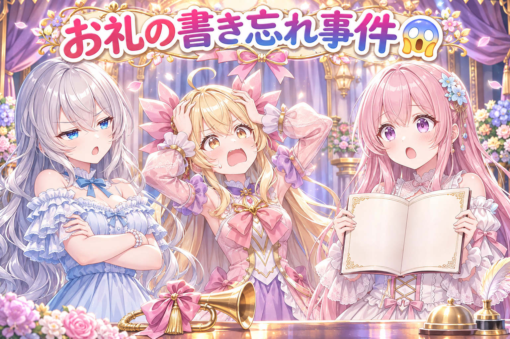
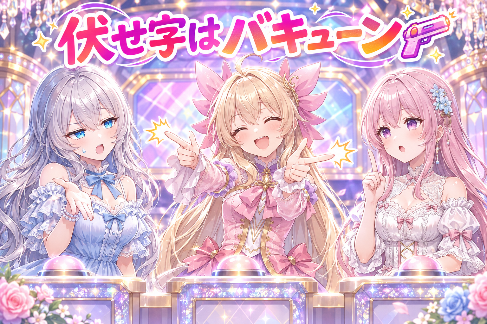

📌 3行まとめ
- 三姉妹アニメのBGMを、場面ごとに流す曲と、決めの瞬間だけ鳴らす曲にきっちり分け直した
- 購入したサウンドトラックを使えるようにしたら、動画の説明欄に曲のクレジットが漏れていたのが見つかって直した
- 伏せ字を銃の効果音で隠す仕組みを足し、公開前の短い漫画動画を厳しい目で点検した

ルピナス （笑顔）
常連リスナーさん、こんにちは。今日も三姉妹のゆるい放送室、開店です。

アイリス （大笑い）
前回はゲームの穴さがしだったけど、今日はあたしたちのアニメの耳の話だよ！ 音、音、音！

フィオナ （ふつう）
ちょうど昨日の夜には、コンビニで一日店員をする新作アニメも公開されたんですよね。その裏で、BGMの並べ方を大きく見直していました。

ルピナス （ウインク）
そう。今日は曲の交代劇と、ちょっとしたやらかしと、銃声の話。……物騒に聞こえるけど、ちゃんと全年齢だからね。
1. BGMは「場面の曲」と「決めの一発」に分けた🎼
三姉妹の会話劇アニメでは、場面に合わせてBGMを自動で選んでいます。これまでは、ちょっとした盛り上がりにも短い「決めの曲（スポット曲）」が入りがちで、場面によっては落ち着きがありませんでした。
そこで、ルピナスが曲を1つずつ試聴して答えた表をもとに、スポット曲は「オチ」「〆」「変身や盛大な登場」など十数種類の決まった瞬間だけに限定。それ以外は、前ぶれ・事後・結末・シリアス・終盤といった場面のカテゴリごとの曲を流すように分け直しました。
さらに、スポット曲はそのリアクションが続く間だけ鳴らし、ジングルは最後まで鳴り切らせる。そしてスポット曲が終わったら、無音で待たずに場面の曲を「止めたところの続きから」再開するようにしています。

アイリス （ドヤ顔）
はい議題！ あたしは決めの曲、毎セリフ鳴らしてもいいと思いまーす！ 全部がクライマックス！

フィオナ （呆れ）
アイリスちゃん、それだと全部がクライマックスなので、逆にどこもクライマックスじゃなくなります。

アイリス （怒り）
えー！ でもファンファーレ鳴ったら気持ちいいじゃん！

フィオナ （考え中）
気持ちいいのは、ここぞの一回だからです。ケーキも毎食出てきたら、ありがたみが消えますよね。

アイリス （びっくり）
毎食ケーキ……それは天国では？

ルピナス （ふつう）
はい、二人とも。ちなみに私が試聴して決めた曲の中には、朝の平和な感じの曲で「スポットじゃなくて普通のBGMにする」って書いたものもあるの。

フィオナ （笑顔）
一曲ずつ、どの場面に合うかを人の耳で決めたんですよね。だから下限だけ決めて、自動で足すのはやめたんです。
アイリス （考え中）
じゃあさ、決めの曲が終わったあと、シーンってなるのは？ あれ、ちょっと寂しかったんだよね。
ルピナス （笑顔）
そこも直したわ。決めの曲が終わったら、場面の曲がさっき止めたところの続きから戻ってくるの。曲の頭とお尻の無音も飛ばしてね。
アイリス （大笑い）
テレビのCM明けみたいだ！ 「さっきの続きからどうぞ〜」って！

フィオナ （ドヤ顔）
はい。最初からやり直すと、同じ前奏を何回も聞かされることになりますから。
ルピナス （ウインク）
というわけで裁定。決めの曲はここぞだけ、毎食ケーキは却下。

アイリス （泣き）
議題より先にケーキが却下された……！
📝 ポイント（初心者向け解説・技術メモ・まとめ）
- 初心者向け解説：BGMを「ずっと流れる部屋の空気」と「ここぞで鳴るクラッカー」に分けたイメージだよ。クラッカーは鳴らしすぎると誰も驚かなくなるから、本当に驚く瞬間だけにしたの🎉
- 技術メモ：場面カテゴリごとの曲の対応表（JSON）と、スポット曲の対応表を分離。スポット曲はリアクションのターン数だけ鳴らす（既定1ターン）、ジングルは鳴り切り。スポット終了後は場面曲を中断位置から再開し、音声ファイル先頭・末尾の無音区間はスキップ。それぞれ試験付き。
- ひとことまとめ：盛り上げの音は、減らすほど効く。
2. 👀 今日のやらかし：曲のお礼を書き忘れた

この日、ルピナスがあるゲームのオリジナルサウンドトラックを購入し、ライセンスも確認したうえで、動画で使えるように取り込みました。大当たり系の華やかな曲は、ボーナス場面の曲のカテゴリに、そして効果音として使っていた音も本物の音源に差し替えています。
ところが確認してみると、その効果音と追加した数曲が、動画の説明欄のクレジットに載っていないことが判明。すぐに自動で載るように直し、ついでに「公開される欄に内輪のメモを入れない」ことも試験で守るようにしました。

アイリス （笑顔）
ではここで、コント「お礼状を出し忘れた人」！ あたし役、ファンファーレ係のアイリスです！
フィオナ （ふつう）
わたしは、説明欄の受付係のフィオナです。……アイリスさん、本日はどの曲をお使いになりましたか？
アイリス （ドヤ顔）
えっとね、キラキラの大当たりの曲と、ドーンってやつと、あとあれと、これと……

フィオナ （びっくり）
……こちらの名簿には、一曲もお名前がありませんが。

アイリス （衝撃）
えええ！？ 使うだけ使って、お礼の名前を書いてない！？ 食い逃げならぬ、聞き逃げ！？

ルピナス （呆れ）
コントの中でいちばん本当の話をするのやめて。実際そうだったんだから。
フィオナ （考え中）
ちなみに、急いで直すときに「動作確認用」みたいな内輪のメモを説明欄に書いてしまう事故もありがちなので、それも試験で止めるようにしました。
アイリス （大笑い）
じゃあ説明欄に「アイリスかわいい」って書くのも止められる？
フィオナ （ドヤ顔）
それは内輪のメモというより、事実の記載ですので……

ルピナス （びっくり）
フィオナ！？ 受付係が買収されてる！

アイリス （ウインク）
お礼状は忘れても、妹へのお礼は忘れないアイリスでした〜！
ルピナス （笑顔）
いい話っぽくまとめないの。……でも、ちゃんと買って、ちゃんと名前を載せる。ここは本当に大事だからね。
📝 ポイント（初心者向け解説・技術メモ・まとめ）
- 初心者向け解説：素敵な曲を使わせてもらったら、エンドロールに作った人の名前を載せるのがお約束。プレゼントをもらったら「ありがとう」を言うのと同じだよ💐
- 技術メモ：使用した音源の一覧から説明欄のクレジットを自動生成する方式にして、漏れを防止。公開欄に内輪メモが混ざらないことを確認する試験を追加。購入音源はライセンス確認済みのものだけを取り込む。
- ひとことまとめ：使った音は、名前まで載せて完成。
3. 伏せ字は「バキューン」で隠すことにした🔫

会話劇では、キャラが勢いで口を滑らせる「伏せ字」の笑いがあります。今回、悪口などを伏せる場面に、昔のテレビのような銃の効果音を重ねる仕組みを足しました。
効果音はクリエイティブ・コモンズ（CC BY 4.0）の素材から複数の長さを用意し、隠したい言葉の長さに合わせて自動で選びます。音の余韻はわざと残して、ブツッと切れないように。クレジットも自動で載るので、さっきのやらかしの二の舞にはなりません。
あわせて、アイキャッチの直後にすぐ小見出しカードが出るように並びも詰めました。
ルピナス （笑顔）
ここでクイズです。伏せ字の言葉が長いとき、効果音はどうするのが正解でしょう？
アイリス （大笑い）
はい！ 長い分だけ連射する！ バキュンバキュンバキュンバキュン！
ルピナス （呆れ）
それはもう伏せ字じゃなくて銃撃戦なんだよね。
フィオナ （考え中）
はい。言葉の長さに合わせて、長さの違う効果音から一つ選ぶ、だと思います。
ルピナス （ウインク）
正解。短い悪口には短い一発、長い悪口には長めの一発。余韻も切らずに残すの。
アイリス （びっくり）
余韻いる？ パッて消えたほうがキレよくない？
フィオナ （ふつう）
ブツッと切れると、編集で失敗したように聞こえるんです。余韻があると「わざとやってます」感が出ます。
アイリス （考え中）
なるほど、わざとっぽさ大事……じゃあ問題！ アイキャッチのあと、すぐ小見出しが出るようにしたのはなんで？
フィオナ （笑顔）
えっ、アイリスちゃんが出題するんですか？ ……間が空くと、見ている人が「止まった？」って思うから、でしょうか。
アイリス （ドヤ顔）
ブッブー！ 正解は「あたしが早く出たいから」でした！

ルピナス （大笑い）
フィオナが正解よ。はい、出題者に伏せ字の一発。

アイリス （あわあわ）
バキューン!? あたしが撃たれる側！？
📝 ポイント（初心者向け解説・技術メモ・まとめ）
- 初心者向け解説：言っちゃいけない言葉の上に、ステッカーを貼って隠すイメージ。言葉が長ければ大きいステッカー、短ければ小さいステッカーを選ぶよ🩹
- 技術メモ：長さの異なる効果音ファイルを複数用意し、伏せる区間の長さに最も合うものを選択。末尾はフェードせず余韻を残す。CC BY 4.0 素材は使用時にクレジットを自動追記。アイキャッチ直後に章タイトルカードを即挿入して間延びを解消。
- ひとことまとめ：隠す音にも、長さと余韻の設計がいる。
4. 公開前の漫画を厳しめに点検した🧘
夜には、近日公開予定の縦長の短い漫画動画を、公開前に厳しい目で点検しました。お話は、前屈が届かないフィオナが「息を吐いて力を抜く」コツで指先が届くものの、力が抜けすぎてそのまま眠ってしまうというもの。
点検では直すことはせず、セリフ・ナレーション・コマごとに誰の顔が映っているかを見比べて、問題を見つけることだけに集中します。作る人と見る人の目を分けるのがコツです。

フィオナ （照れ）
あの……わたしが寝てしまうお話、ちょっと恥ずかしいです……
ルピナス （にやり）
いいじゃない。私、あのオチ大好き。なんならもう一回寝てほしい。今ここで。

アイリス （呆れ）
お姉ちゃん、今日ちょっと暴走してない？ 点検の話してるんだよ、点検の。
ルピナス （大笑い）
だって、息を吐いて、ふーって力を抜いて……ふー……
アイリス （衝撃）
お姉ちゃんが寝かけてる！ 進行役が前屈オチを再現しないで！
フィオナ （考え中）
でも、実際に力を抜くと体がやわらかくなるのは、ストレッチではよく言われることなんですよ。

アイリス （ふつう）
はいはい、で、点検はどこを見たの？ 作った人が見ると、自分の頭の中で勝手に補っちゃうから、別の目で見るんだよね。
ルピナス （びっくり）
……アイリスがちゃんと解説してる。
アイリス （ドヤ顔）
今日はあたしがしっかり者担当なの。お姉ちゃんが寝てるから。
フィオナ （笑顔）
セリフとコマで、しゃべっている人と映っている顔が合っているかも見ました。ズレていると、誰が話しているか分からなくなりますから。
ルピナス （笑顔）
……はっ。うん、起きた。二人ともありがとう。でも本当に、ストレッチのあとはちゃんと寝るのが一番よ。夜ふかし禁止ね。
アイリス （大笑い）
寝かけてた人がいちばんいいこと言った！
📝 ポイント（初心者向け解説・技術メモ・まとめ）
- 初心者向け解説：自分の書いた手紙の誤字って、なぜか自分では見つけにくいよね。だから公開前は、作った人とは別の目で「見つけるだけ」の係を立てるの🔍
- 技術メモ：レビュー役には修正を禁止し、台詞・ナレーション・コマごとの表示キャラ情報だけを読ませて指摘を列挙させる。ファイル全体を読ませず必要な項目に絞ることで、指摘の精度と手間を両立。
- ひとことまとめ：作る目と見る目は、分けるほど強い。
5. 🎁 お楽しみコーナー：大喜利「こんな効果音はイヤだ」
今日は音の話が多かったので、お題はこちら。「アニメで流れたらイヤな効果音、どんなの？」
ルピナス （笑顔）
じゃあ一人ずつ。いい回答には座布団あげるわ。まずアイリス。
アイリス （大笑い）
感動のお別れシーンで、レンジの「チン！」が鳴る。

フィオナ （大笑い）
ふふっ……温め終わっちゃいましたね、感動が。
フィオナ （ドヤ顔）
告白のセリフにだけ、ちょうどぴったりの長さのバキューンが入る。
アイリス （衝撃）
一番大事なところが伏せ字！ 何て言ったの！？ 今日作った機能で一番やっちゃダメなやつ！
ルピナス （大笑い）
余韻までしっかり残ってるのがまた腹立つよね。座布団二枚。
アイリス （怒り）
えー！ じゃあお姉ちゃんの番！ 進行役だからって逃げないでよ！

ルピナス （考え中）
そうね……決めのファンファーレが鳴ったあと、BGMが続きからじゃなくて、また最初の前奏からやり直し。
フィオナ （呆れ）
お姉ちゃん、それは大喜利じゃなくて、今日直した不具合の報告です……
アイリス （ウインク）
お姉ちゃんの座布団、一枚没収〜！
みんなが思いつく「流れたらイヤな効果音」、コメントでこっそり教えてね！ いちばん笑ったものには、三姉妹から心の座布団を送ります。
6. 💐 今日のまとめ
- BGMは「場面の曲」と「決めの一発」に分けると、盛り上がりが際立つ
- 決めの曲のあとは、場面の曲を続きから再開すると間延びしない
- 使わせてもらった曲や効果音は、クレジットまで自動で載せる仕組みにしておくと漏れない
- 公開前の点検は、作る人とは別の目で「見つけるだけ」に絞ると強い
みんなは動画やゲームを作るとき、BGMってどうやって選んでる？
💬 コメント
お名前とコメントだけで送れるよ（承認されるとみんなに表示されます🌸）
コメントを読み込み中…